소프트웨어 공학 (SE : Software Engineering)
소프트웨어 공학은 소프트웨어의 위기를 극복하기위한 방안으로 연구된 학문이다. 여러가지 방법, 도구, 관리기법 을 써서 품질과 생산성 향상을 도모한다.
소프트웨어 공학의 3원칙
- 현대적 프로그래밍 기술을 계속적으로 적용한다.
- 지속적으로 검증한다.
- 개발 관련 사항 및 결과를 명확히 기록하여 유지한다.
소프트웨어 공학은 소프트웨어의 위기를 극복하기위한 방안으로 연구된 학문이다. 여러가지 방법, 도구, 관리기법 을 써서 품질과 생산성 향상을 도모한다.
소프트웨어 공학의 3원칙
소프트웨어 생명주기란 소프트웨어를 개발하기 위한 설계,운용,유지보수 등의 과정을 각 단계별로 나눈것
나선형 모형, 폭포수 모형, 프로토타입 모형, 애자일 모형 등.
나선따라 돌아가며 점진적으로 완벽한 소프트웨어를 만든다. 보햄(Boehm)이 제안함.
4가지 주요활동

고객평가에서 수정사항등이 발생하면 다시 계획수립부터 반복
가장 오래된 생명주기 모델. 폭포수가 한번 떨어지면 다시 올라가지 못하는 것 처럼, 한번 단계를 넘거가뿔면 이전 단계로 갈 수 없음. 철저하게 검토하고. 승인과정을 거쳐서 완벽하게 만든 다음 단계를 진행.
고객의 요구사항을 알기위해서 견본품을 미리 만들어보는것.
빠르고 낭비없는 고객과의 소통 고객의 요구사항 변화에 유연하게 대응. 스크럼(Scrum) , 익스트림 프로그래밍 (XP, eXtreme Programming), 칸반(Kanban), Lean, 기능중심개발 (FDD:Features Driven Development)
에자일의 핵심가치
하나의 팀을 구성하여 개발 효율을 높임
스크럼의 구성원
스트린트 계획 회의→스프린트→일일 스크럼 회의→스프린트 검토 회의→스프린트 회고
수시로 발생하는 고객의 요구사항에 유연하게 대응 하기 위해 고객의 참여와 개발과정의 반복 을 극대화 하여 개발 생산성을 향상시키는 방법
를 통해 소프트웨어를 빠르게 개발하는 것이 목적.
익스트림 프로그래밍에는 몇가지 실천방법(Practice)가 있는디 다음과 같슈.
사용자와 데이터베이스 사이에서 사용자의 요구에 따라 정보를 생성해주고, 데이터베이스를 관리해주는 소프트웨어
DBMS 관련 요구사항 식별시 고려해야 할 사항
사용자의 요구에 따라 변화하는 동적인 콘텐츠를 처리하기 위해 사용하는 미들웨어
요구사항 식별시 고려사항
아무나 제한없이 사용할 수 있도록 소스코드가 공개된 소프트웨어
요구사항 식별시 고려사항은 다음이유
품질이나 제약사항과 관련된 요구사항. 시스템의 장비구성, 성능, 인터페이스, 테스트, 보안 등의 요구사항.
| 구분 | 정형 명세 기법 | 비정형 명세 기법 |
|---|---|---|
| 기법 | 수학적 원리기반, 모델 기반 | 상태/기능/객체 중심 |
| 작성방법 | 수학적 기호, 정형화된 표기법 | 일반명사,동사 등 자연어 기반 서술 또는 아이어그램 |
| 특징 |
|
|
| 종류 | VDM, Z, Petri-net, CSP | FSM, Decision Table, ER모델링, State Chart(SADT) |
| 기호 | 의미 |
|---|---|
| 프로세스 (Process) | 자료를 변환시키는 시스템의 한 부분(처리과정)을 나타냄. 처리, 기능, 변환, 버블이라고도 함 |
| 자료 흐름 (Data Flow) | 자료의 이동(흐름)이나 연관관계 |
| 자료 저장소 (Data Store) | 자료저장소 (파일, 데이터베이스) |
| 단말 (Terminator) | 시스템과 교신하는 외부개체. 입력 데이터 만들어지고 출력데이터 받음. |
자료 흐름도에 있는 자료를 더 자세히 정의하고 기록한것
자료 사전에서 사용되는 표기기호
| 기호 | 의미 |
|---|---|
| = | 자료의 정의 : ~로 구성되어 있다 (is composed of) |
| + | 자료의 연결 : 그리고 (and) |
| () | 자료의 생략 : 생략 가능한 자료 (Optional) |
| [] | 자료의 선택 : 또는 (or) |
| {} | 자료의 반복 : Iteration of |
| ** | 자료의 설명 : 주석 (Comment) |
요구사항을 자동으로 분석하고, 요구사항 분석명세서를 기술하도록 개발된 도구
사물과 사물 사이의 연관성을 표현
관계의 종류
사람⎯1⎯⎯⎯⎯1⎯>집 사람은 집을 소유한다. 사람은 집에 대하 알고 있지만 집은 자신의 소유자를 모른다. 사람 쪽의 다중도 1이므로 집은 한사람의 집주인만 가질 수 있다. 집 쪽의 다중도가 1이므로 사람은 집을 하나만 가질 수 있다.
컴퓨터◇⎯⎯⎯⎯프린터프린터는 컴퓨터에 연결 가능, 다른 컴퓨터 연결 가능.
문(Door)◆⎯⎯⎯⎯키(Key)문을 열 수 있는 키는 하나. 해당키로 다른 문 열수 없다. 문이 없어지면 키도 불필요.
| 커피 | ◁⎯⎯에스프레소 |
| ◁⎯⎯⎯⎯⎯⎯⎯⎯아메리카노 |
등급------->할인율 등급이 높으면 할인율 적용하고 낮으면 적용하지 않는다.
| 날 수 있다 | ◁--------새 |
| ◁----------------비행기 |
사물과 관계를 도형으로 표현한 것
답
- 소프트웨어 개발 방법론의 바탕이 되는것으로, 소프트웨어를 개발하기 위한 설계, 운용, 유지보수 등의 과정을 각 단계별로 나눈 것이다.
- 소프트웨어 개발 단계와 각 단계와 각 단계별 주요활동, 그리고 활동의 결과에 대한 산출물로 표현한다.
- 이것의 대표적인 모형에는 폭포수 모형, 프로토타입 모형, 나선형 모형, 애자일 모형 등이 있다.
답
- ( )모형은 고객의 요구사항 변화에 유연하게 대응할 수 있도록 일정한 주기를 반복하면서 개발과정을 진행한다.
- 어느 특정 개발 방법론이 아니라 좋은 것을 빠르고 낭비 없게 만들기 위해 고객과의 소통에 초점을 맞춘 방법론을 통칭한다.
- 각 개발주기에서는 고객이 요구사항에 우선순위를 부여하여 개발 작업을 진행한다.
- 소규모 프로젝트, 고도로 숙달된 개발자, 급변하는 요구사항에 적합하다.
답( )은 애자일 모형을 기반으로 하느 팀 중심의 소프트웨어 개발 모형으로, 럭비에서 반칙으로 경기가 중단된 경우 양 팀의 선수들이 럭비공을 가운데 두고 상태팀을 밀치기 위해 서로 대치해 있느 팀 대형인 ( ) 에서 유래하였다. ( )은 10명 이하의 팀으로 구성되어 백로그(Backlog)를 기반으로 개발을 진행하며 스프린트(Sprint)라는 실제 개발 과저을 2~4주 기간바다 반복한다.
답
- 수시로 발생하는 고객의 요구사항에 유연하게 대응하기 위해 고객의 참여와 개발 과정의 반복을 극대화하여 개발 생산성을 향상시키는 모형이다.
- 짧고 반복적인 개발주기, 단순한 설계, 고객의 적극적인 참여를 통해 소프트웨어를 빠르게 개발하는 것을 목적으로 한다.
- 릴리즈 테스트마다 고객을 직접 참여시킴으로써 요구한 기능이 제대로 작동하는지 고객이 직접 확인할 수 있다.
- 의사소통(Communication), 단순성(Simplicity), 용기(Courage), 존중(Respect), 피드백(Feedback)을 핵심가치로 삼는다.
| 실천방법 | 내용 |
|---|---|
| ( 1 ) | 다른 사람과 함께 프로그래밍을 수행함으로써 개발에 대한 책임을 공동으로 나눠 갖는 환경을 조성한다. |
| Test-Driven Development |
|
| ( 2 ) | 개발에 참여하는 모든 구성원(고객 포함)드은 각자 자신의 역할이 있고 그 역할에 대한 책임을 가져야 한다. |
| Continuous Interation(계속적인 통합) | 모듈 단위로 나눠서 개발된 코드들은 하나의 작업이 마무리될 때마다 지속적으로 통합한다. |
| Refactoring(리팩토링) | 프로그램 기능의 변경 없이 단순화,유연성 강화 등을 통해 시스템을 재구성한다. |
| Small Release(소규모 릴리즈) | 릴리즈 기간을 짧게 반복함으로써 고객의 요구변화에 신속히 대응할 수 있다. |
답ㄱ : 항공편, 탑승객, 예약을 입력하는 방법을 결정해야 한다.
ㄴ : 티켓과 리포트에 어떤 정보를 표시할지 결정해야 한다.
ㄷ : 여행사와 고객이 데이터베이스에 접근할 떄 어떤 정보를 얻을 수 있는지 결정해야 한다.
ㄹ : 자주 탑승하는 고객으 서비스하기 위해 시스템을 확장할 수 있도록 설계해야 한다.
답요구사항 명세기법은 (1)기법과 (2)기법으로 구분된다.
구분 (1)기법 (2)기법 기법 수학적 원리 기반, 모델 기반 상태/기능/객체 중심 작성법 수학적 기호, 정형화된 표기법 일반 명사, 동사 등의 자연어를 기반으로 서숳 또는 다이어그램으로 작성 특징
- 요구사항을 정확하고 간결하게 표현할 수 있음
- 요구사항에 대한 결과가 작성자에 관계없이 일관성이 있으므로 완전성 검증이 가능함
- 표기법이 어려워 사용자가 이해하기 어려움
- 자연어의 사용으로 인해 일관성이 떨어지고, 해석이 달라질 수 있음
- 내용의 이해가 쉬워 의사소통이 용이함
답요구사항 분석에서 자료의 흐름 및 변환 과정과 기능을 도형 중심으로 기술하는 방법을 자료흐름도라고 한다. 자료 흐름도에서 사용하는 네가지 기본 기호는 다음과 같다.
프로세스(Process)
- 자료를 변환시키는 시스템의 한 부분(처리과정)을 나타내며 처리, 기능, 변환, 버블이라고 한다.
- 원이나 둥근 사각형으로 표시하고 그 안에 프로세스 이름을 기입한다.
(1)
- 자료의 이동(흐름)이나 연관관계를 나타낸다.
- 화살표 위에 자료의 이름을 기입한다.
(2)
- 시스템에서의 파일, 데이터베이스 등을 나타낸다.
- 도형 안에 저장소의 이름을 기입한다.
단말(Terminator)
- 시스템과 교신하는 외부 개체로, 입력 데이터가 만들어지고 출력 데이터를 받는다.
- 도형 안에 이름을 기입한다.
답
ㄱ : 집합(Aggregation) 관계 ㄴ : 포함(Composition) 관계 ㄷ : 일반화(Generalization) 관계 ㄹ : 의존(Dependency) 관계
답
- ㄱ : 유스케이스 다이어그램
- ㄴ : 클래스 다이어그램
- ㄷ : 시퀀스 다이어그램
- ㄹ : 커뮤니케이션 다이어그램
- ㅁ : 객체 다이어그램
- ㅂ : 컴포넌트 다이어그램
- ㅅ : 배치 다이어그램
- ㅇ : 상태 다이어그램
- ㅈ : 활동 다이어그램
- ㅊ : 상호작용 개요 다이어그램
- ㅋ : 타이밍 다이어그램
- ㅌ : 복합체 구조 다이어그램
- ㅍ : 패키지 다이어그램